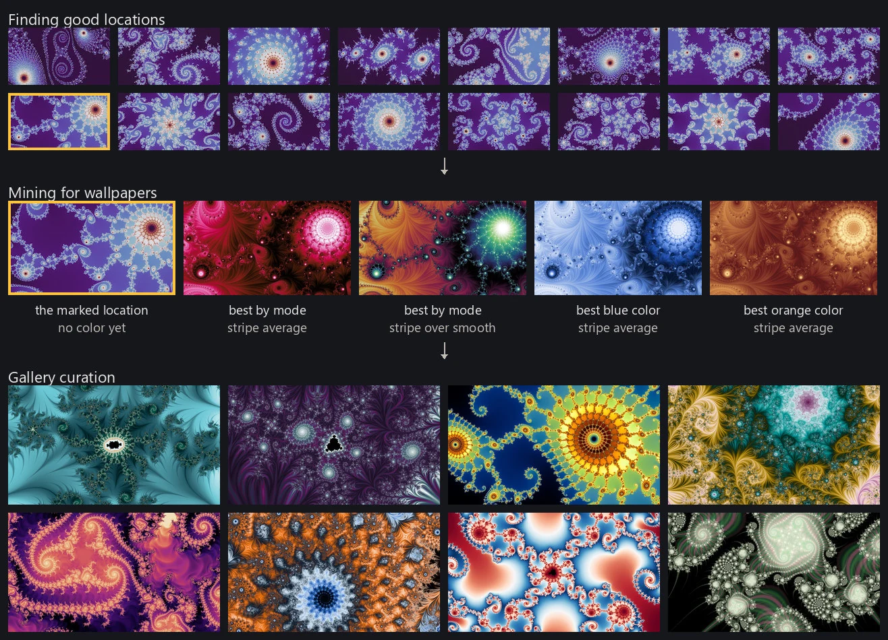
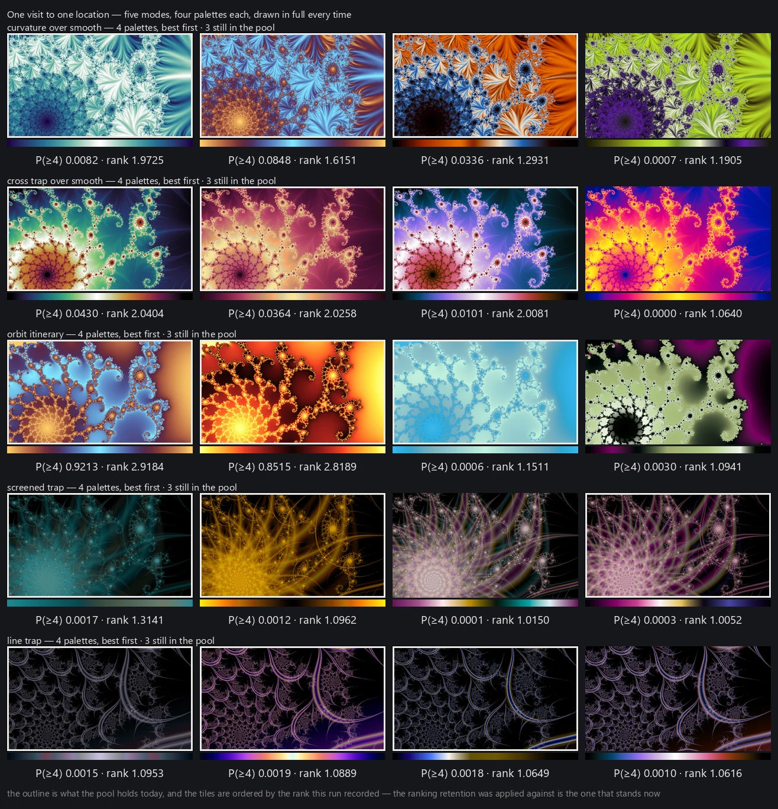

Finding good locations ends with a stock of rated frames, none of them yet drawn as anything a person would want on a screen. A location is not a wallpaper. It is a place, and the same place can be beautiful in one rendering mode and dull in another, striking in one palette and muddy in the next. Turning a stock of places into a stock of pictures is its own problem, and it is where most of the project's rendering time goes. Mining draws on more than the search admitted: any location the judge is not confident is junk can be tried, because that judge is a prior on where to look rather than a verdict on the picture.

How one picture is made
The unit of work is one small picture, and making one is always the same four steps.
The location's smooth field is computed once, at a small size: 640 by 360, the geometry the judges were trained at. The thirty-two-palette neighborhood from color palettes is built over that field and the palette judge picks one of them. The rendering mode being tried then draws the picture through the chosen palette, as rendering modes described, at that size with two-by-two supersampling, and the render judge scores it. Only the plain field modes read the same field the palette was chosen on, so the palette is usually picked on one picture and spent on another.
What that produces is a candidate: one location, one mode with its settings, one palette, the judge's scores, and the small picture itself. Everything else on this page is about which candidates to make.
One economy shapes the whole thing. For the modes that read a single scalar field, the field can be computed once and then colored many times over, so a second look at the same place in the same mode costs a coloring rather than a render, and even autolevel's second pass is another coloring. The composite modes, the direct traps, and the mode that shifts where each sample reads in the map build their pictures differently and have to be drawn in full each time.

The pool
Every mine, one session of this drawing and judging, empties what it made into a single pool, and a gallery is chosen from the pool as a whole rather than from whatever the last session happened to produce. The pool does not simply grow. Each time a mine merges into it, only the best few candidates at each place and mode survive and the rest are deleted, so what builds up over time is coverage: more places, tried in more ways, rather than a larger and larger heap.
Keeping the pool separate from the mining that fills it is what makes this work. A place found once is found for good, and a mine never has to justify itself by what it ships. It is adding to a store rather than putting a collection together, which leaves it free to spend a whole session on a single question.
Breadth and depth
Mining has two uses for a budget and they compete. Breadth opens places the pool holds nothing for, a few attempts each, modes cycled so no one mode takes the whole visit. It is deliberately shallow: a few looks are enough to learn whether a place can give anything, and a palette sweep everywhere would buy that same answer at many times the price. Depth goes the other way and holds one location and one mode while it tries many more palettes there. It is worth most where the field is already computed, or where the candidate standing at a place sits just under the bar and another palette might carry it over.

Where the budget goes
Mining time is finite, and how it is spent decides what the collection can contain. The rule is simple: mine until the pool holds what a gallery needs, and let the gallery say when it does not. A general mine draws its modes uniformly over the whole roster, and most of its time goes to the modes that must be drawn in full, because they are most of the roster and each costs several times what a recoloring does. They are also the ones a gallery is most often short of. When a gallery is chosen and comes up short, the shortfall names the modes, colors and families it lacked (gallery curation), and the answer is to mine longer, not to mine differently.
Keeping only what earns its place
A mine that visits a location many times produces many pictures of it, and keeping them all would fill a disk with variations nobody will ever choose between. So the pool keeps the best five candidates of each location and mode, ranked among themselves. A mode drawn with its settings changed keeps its own five rather than competing with the mode's default.
How candidates are ranked
Ranking candidates within a location needs one number, and no single judge's output is that number. The render judge's score at its top threshold is the obvious candidate and is not enough on its own: as training judges described, it does not have much resolution left among the good ones.
So the prune ranks on a fitted combination: the location judge's own opinion of the place, the render judge at both of its thresholds, and a measure of how much of the frame is dead flat space. It is an ordering device rather than a bar. Its advantage over the render judge alone was real when it was fitted and has not survived the label corpus tripling: refitted today it buys nothing over the top-threshold score, because the judge improved underneath it. It stays as the prune's order, and newer ranking ideas are tried first in gallery selection, which can be taken again, rather than in a prune that deletes.
The pictures that make it through all of this are the pool that gallery curation chooses from.